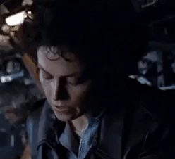
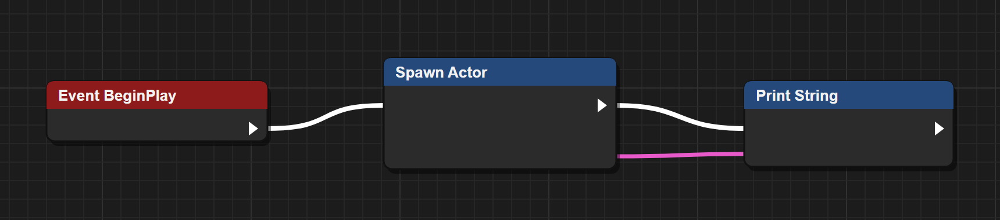
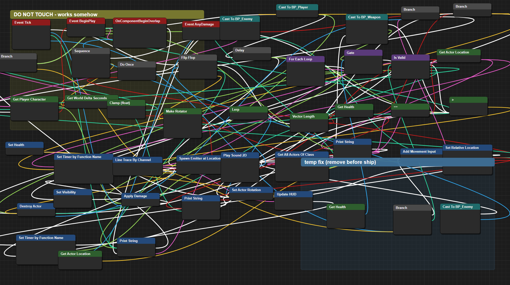

From blueprintue.com: Pong (anonymous), asteroid shooter (siljaZ), Lock-On System (hitted); authors keep the rights. Counts: TASKS.md.
How we build Blueprints this big in a day
We don’t draw Blueprints. We print them.
Someone wired Lock-On by hand, node by node: 162 nodes. Overnight we printed a whole game in production: 4,201 graphs, 67,284 nodes, 79,507 wires.
1
Read. Roslyn, the C# compiler’s own reader, takes in every line of the finished code: its meaning, not just its text.
2
Graph. Each method becomes one logic graph, and a call opens its own graph: 14,499 links, none to nowhere.
3
Print, then prove. The Blueprint is printed from the graph, and the graph prints back to the exact same code: 4,201 of 4,201.
Then the requirements hang on that same graph.
■ Lock-On, wired by hand: 1 square
The game, printed: over 415 Lock-Ons’ worth of nodes.
Counts: the Blueprint view’s build log, Wed 28 Oct (runs/graphs_build_tr2.log, REQ-BPV-7); Lock-On from FRICTION_LOCKON.md.
The big idea
Code is just one way of writing it down.
Underneath every program is something rawer: the problems it solves, the answers it gives, and every exchange between a person and the machine. Capture all of it, with nothing left out, and code becomes a translation you pick, like a language.
That complete capture is what we call closed loop requirements.
Closed loop requirements
How to easily understand closed loop requirements
Think of a recipe so complete that a stranger cooks your exact dish, and every “what if” is written down: out of eggs? oven runs hot? Nothing is left to guess.
1
Take a finished program
One that already works.
2
Tie each line to a story step
Who does what, and why.
3
Read the story in order
Step by step, every side path too.
4
Every gap is a question
Asked out loud, never guessed.
5
The loop closes
Every question answered, or handed to its owner.
Closed loop, measured
Every requirement carries a check, or the reason it can’t yet
Each requirement is judged by one question: what mistake can still get past it? 35 of 43 now carry a check that can fail. The other 8 carry a written reason: calls only the author can make.
Effect
What the code must set, call, branch on or read, and where.
Terms
Each word bound to a name in the code, so nothing reads two ways.
Lock
A fingerprint as last verified. Edit the requirement, or the line it reads, and it comes back stale.
On the public Blueprint
84 of 84 hold
checks from the 25 requirements read from the code
13 fail
checks from 10 of the owner’s questions: the defects
97 of 97
planted faults caught
“Lock-On System” (hitted, blueprintue.com). The loop is still open: 18 questions only its author can answer.
Why this matters for AI
Nobody types “build GTA 6” and gets GTA 6
A prompt
Build GTA 6.
Which city? Whose rules? What happens when the car hits the wall? Every answer the AI invents is a guess.
A closed loop
Every step of every story, in order
Every “what if”, answered or handed to its owner
A check the AI’s work must pass, wherever one can be written
A prompt is a wish. The loop is the instructions the AI acts on.
Take away the syntax. Three things are left.
Problems
What hurts, and why someone came to the software at all.
Solutions
What the system does about each problem, and when.
Interactions
Every back and forth between a person and the machine.
Written down as
User stories
Use case descriptions
Class diagrams of the concepts
That is the new raw element. Every language is now an interpreted one.
One source. Every view.
The loop
requirements and one logic graph
Blueprint
C#
C++
Pseudo-code
3D city
92 of 92
Unreal Engine’s own template Blueprints turned into C# and pseudo-code, none failed. The C++ view still marks 11% as C#.
4,201 of 4,201
Methods of a game in production drawn as node graphs, each one printed back to its exact source.
1,270 of 1,270
Methods of a second game, a 2011 XNA title, through the same reader.
Counted by the converter’s round-trip check: Unreal 5.7.1’s own templates, our production game, and a 2011 XNA game.

I say we take off and nuke Blueprints from orbit. It’s the only way to be sure.
Kidding
We keep Blueprints.
Whole teams build games with them, and for small things they are wonderful. The trouble is a paradox.
The Blueprint paradox
Easy on day one. Out of control by month six.
Day 1

How did something so easy get so out of control?
Built to make logic simple for non-programmers, Blueprints turn any complex system into a massive, unreadable grid.
Both pictures are illustrations in the editor’s style, not a real project.
Month 6

Well…
One public 162-node Blueprint: 200 wires, 29 crossings.
That escalated quickly.
The Blueprint paradox, in three frictions
Why Blueprints hurt
1
Too many lines.
Wires everywhere, until nobody can see the logic.
2
The objects go missing.
Object-oriented underneath, procedural on screen.
3
Forcing objects in is worse.
A strict object graph buries you in pipes and gates.
Where our numbers come from
We picked a messy Blueprint on purpose
Real, public, and not ours
Someone published it on blueprintue.com to share it. We did not write it, tidy it, or go looking for a flattering one.
Small enough to read, big enough to tangle
A lock-on targeting system for Unreal Engine 5.0: 162 nodes spread over 12 graphs.
Counted, never typed
Every Blueprint number in this deck is produced by our tools from the pasted text, which they re-read from the published page.
Why this one
If the tools can read a stranger’s messy Blueprint, they can read yours.
The game numbers come from our own game in production: 4,201 methods and six recorded battles.
Sample: “Lock-On System” by hitted, blueprintue.com/blueprint/kg2evmas. The pasted text stays the author’s; we keep only our counts.
Friction 1 · Too many lines
The visual clutter of Blueprints
The spaghetti wire effect
Text reads top to bottom. A Blueprint drags each value across the screen, so one shared variable cuts through everything else.
Zoom blindness
Zoom out to see the shape and you can’t read a node. Zoom in to fix one and the shape is gone.
Two kinds of wire, one screen
White wires say what happens next. Coloured wires carry values. They cross, and you have to track both at once.
Measured on a real Blueprint
200 wires
82 for order, 118 for values
29 crossings
17 of them an order wire over a value wire
2,736 × 2,160
units of canvas to pan for one event graph
Sample: “Lock-On System” by hitted, published on blueprintue.com (Unreal Engine 5.0, 162 nodes). Counts read from the author’s own layout.
Friction 2 · The objects go missing
Objects underneath, procedures on screen
The hierarchy hides
A child Blueprint inherits everything from its parent, yet its graph opens blank. Reaching the parent takes a special node.
No encapsulation
Text code hides a fifteen-step routine behind one line, TakeDamage(10). In Blueprints it gets copy-pasted, node for node.
The Cast To trap
Instead of one clean interface call, every use starts with a Cast To roadblock in the middle of the graph.
Measured on a real Blueprint
0 parents
named anywhere in the pasted Blueprints
4 Cast Tos
each testing an actor’s class before using it
1 rule, twice
a six-node chain copy-pasted, plus 3 variables written from several graphs
Sample: “Lock-On System” by hitted, published on blueprintue.com (Unreal Engine 5.0, 162 nodes).
Friction 3 · Forcing objects in is worse
Why a pure object graph fails people
The grid problem
Player.Weapon.Stats.Damage is one line of text. Drawn as boxes inside boxes, it is a map you have to travel.
Invisible relationships
Draw every child-to-parent link as a pipe and the screen turns into a matrix of lines.
Encapsulation gates
Showing Health on screen would take a reference, a getter and a gate, each one a node to wire by hand.
Measured on a real Blueprint
12 graphs
spread over 4 pasted texts, one variable written in 4 of them
5 calls
made by a function name typed in a string, which the editor can’t follow
43 of 162
nodes are only variable reads and math
Sample: “Lock-On System” by hitted, published on blueprintue.com (Unreal Engine 5.0, 162 nodes).
What is easy?
Visual programming misread what makes things easy
The bet
Pictures are easier than words
So draw the code: boxes and wires instead of text. It works, for three nodes.
How people understand
We see pictures. We understand stories.
Who wants what, what happens next, and what if it goes wrong.
A wiring diagram is a picture with no story. That is why it stops being easy.
Back to the cave
We have understood in stories since the cave
UC-1 Hunt the bison
Actor: the hunters
Goal: feed the tribe
1. Track the herd to the river.
2. Circle one bison.
3. Strike together.
2a. Herd stampedes: climb, wait.
A use case is that same story: an actor, a goal, steps in order, and every “what if”. That is why the loop is built on them.
The fix
Three ideas, working together
1 · The source
Closed loop requirements
One complete description that every language and every picture is drawn from.
2 · The shape
Human ergonomics
Logic arranged the way a mind holds it: parent and child, one step after another.
3 · The motion
Observational understanding
A system that keeps running, so you learn it by watching it, not by reading it.
Idea 2 · Human ergonomics
Shaped for the way people think
Analogies you already know. A class is a district in a city. Its parent class is the floor it stands on.
Parent and child. A big idea breaks into smaller ones you open one at a time.
In a line. Steps read in order, like a story, never as a web of wires.
Order runs up here
Values run down here
The child class: one district
The parent class: the floor it stands on
0 long wires
across six or more steps, where a one-to-one drawing of the game’s core had 2,343
Never cross
order pipes run above the nodes and value pipes below, by construction
Folded in
variable reads and math become words in a line, not nodes to wire
Counted by the layout check over every graph of our game’s core code.
Idea 3 · Observational understanding
Learn it by watching it run
Watch it run
Pulses travel the pipes. Heavy values flow thick, simple ones trickle. Two lock-on functions fire 100 times a second, and here they glow red.
Rewind it
Every path replays step by step: all 54 in the sample. On our game, scrubbing found a deliberately planted bug at its exact step: one hit, 339 to 372.
Change it mid-flight
Turn a valve to double one damage value: six battles replay with it, the slowest in 0.84 s, with no rebuild.
Try it: play Pong or the asteroid shooter and watch its own Blueprint run, each node lighting as it fires.
Game numbers: six recorded battles of our game, replayed headlessly. Sample numbers: the Lock-On Blueprint.
Proof · A public Blueprint
The loop asks what a reader misses
18 vs 9
The loop holds 18 questions only the owner can answer. An AI reasoning from the converted code alone reached 9 of them.
Some of what it flagged
The enemy writes DistanceToFrankVar. The search reads Distance to Frank Var. Two different variables.
When the locked-on target dies, the lock is never released.
Every enemy runs a line trace 100 times a second, with debug drawing left on.
Does the old target ever hear it lost the lock? The pasted graphs never say.
Sample: “Lock-On System” by hitted on blueprintue.com. 162 of 162 nodes tied; 54 paths: 48 covered, 6 excluded with a reason.
Before and after
The same Blueprint, side by side
Friction
As published
In the new view
Long wires
200 wires, 29 crossings
0 wires across 6 or more steps
Order over values
17 crossings
None: they run on separate levels
Finding one node
Pan a 2,736 × 2,160 canvas
One typed or spoken command
The hidden parent
Named nowhere
Read from the code: FrankBP is a Character
Cast To
4 casts
1 interface, proposed (not yet applied)
Answering 10 questions
1.6 million tokens of raw text
9,053 tokens: 181× fewer
Every node accounted for
No link to any requirement
162 of 162 tied to a requirement
Measured by the tools on “Lock-On System” (hitted, blueprintue.com). Not yet measured with people: that is the next step.
The far future
Picture a program that ships as a zip file
game.zip
Inside
stories.graph
rules.graph
checks.graph
No .cpp, no .cs, no Blueprints
Unpacked by AI
and written into a running program, in real time.
Does the zip contain code? No.
It holds a graph of closed loop reasoning: the program’s raw essence, which an AI extrapolates back into the program.
Five years from now
You describe it.
The loop holds it.
You see it your way.
Blueprints, C#, C++, a city you fly through: all just views. The requirements are the program.
Where it stands today
Built, measured, and ready for people
Working now
Blueprint to code and code to graph, a five-way view, the 3D city, two games playing on their converted Blueprints, replays and valves.
Next
Developers using it for real, with friction measured before and after. So far only machines have tested it.
Then
Inside the Unreal editor as a panel, and spoken changes, not only spoken commands.